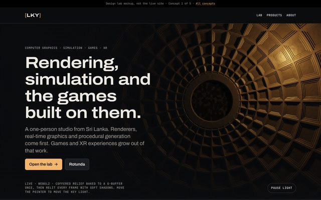
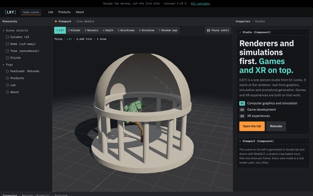
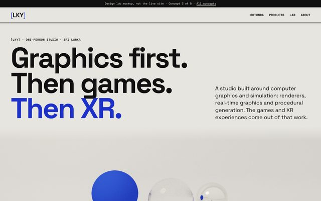
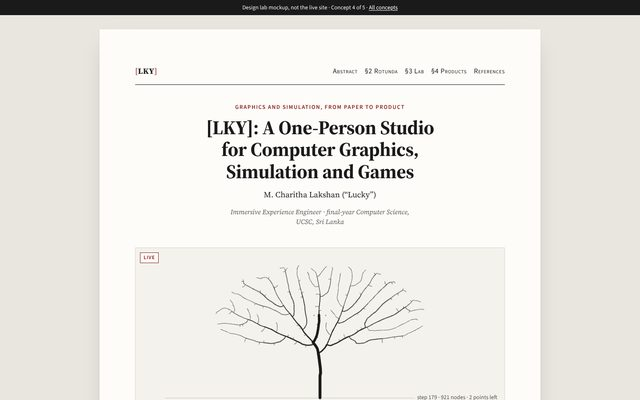
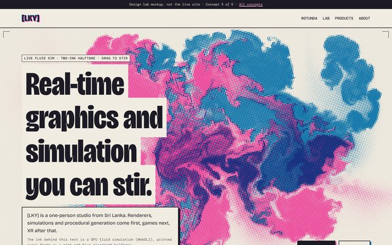

-

1 · Key Light, Relit
The current design, re-angled: a coffered dome relief baked to a G-buffer and relit live by a key light that follows the pointer.
-

2 · Viewport
The home page as an engine editor: hierarchy, inspector and a live viewport with seven real debug view modes.
-

Recommended3 · Converge
High-key Swiss layout around a live path tracer whose white studio cove melts into the page. It converges, then sleeps.
-

4 · Proceedings
The home page typeset as a graphics paper, with a live space-colonization tree as Figure 1 and real equations.
-

5 · Stir
A risograph zine around a GPU fluid simulation, printed every frame as a two-ink halftone. Drag through it to stir.